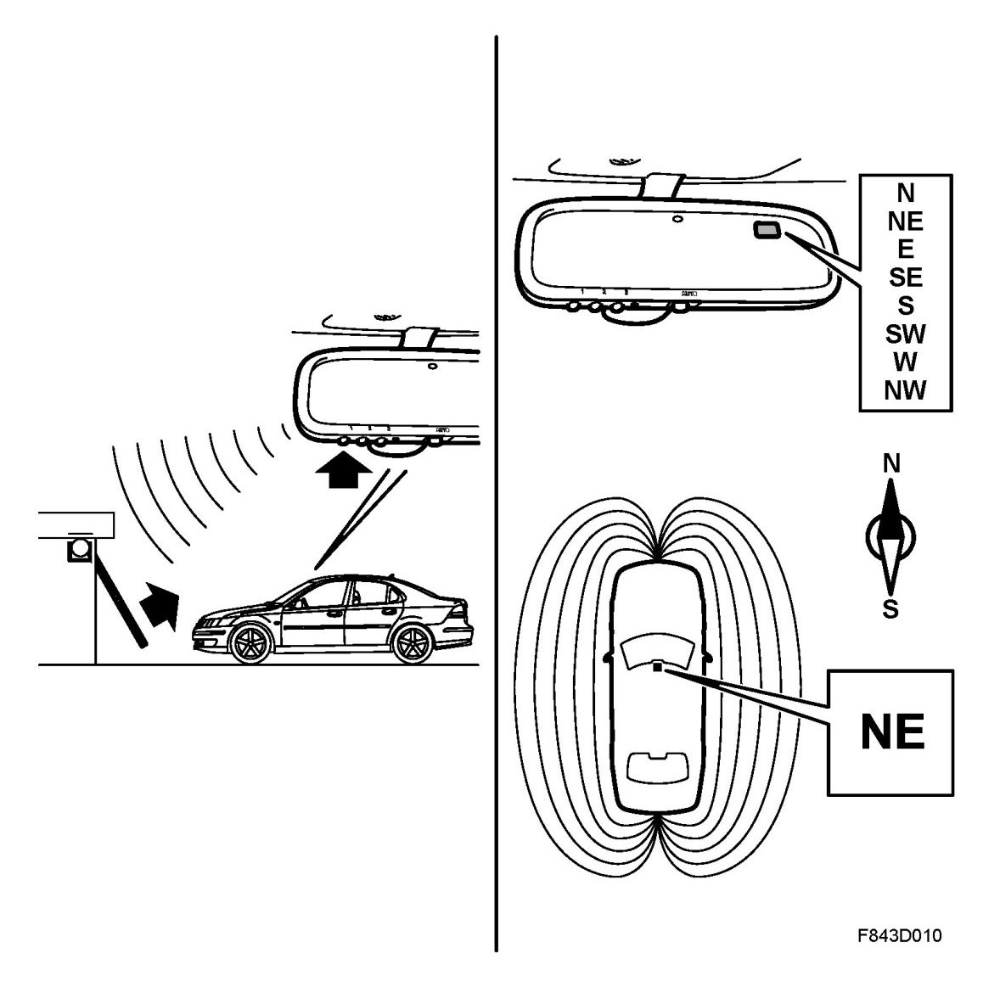

Interior Rearview Mirror With Remote Control, Garage Door Opener And Compass, Brief Description (US/CA)
Interior Rearview Mirror With Remote Control, Garage Door Opener And Compass, Brief Description (US/CA)
Overview

The garage door opener is integrated in the rearview mirror. This garage door opener is meant to eliminate the need for separate remote controls for garage door openers.
The garage door opener can store the frequencies of up to three remote controls. The garage door opener can learn rolling codes and fixed codes. Note that the programming procedure differs for rolling and fixed codes.
The compass is electronic and displays the bearing in a small display in the mirror glass. The compass displays the following bearings: N, NE, E, SE, S, SW, W and NW. The bearing is updated every other second. It is possible to compensate for the variation in the earth's magnetic field as well as interference caused by the car's magnetic field.